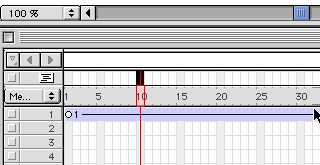
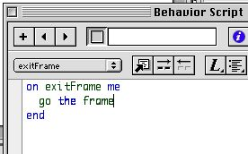
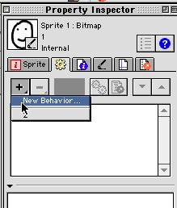
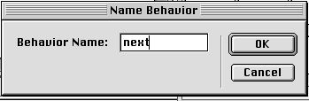
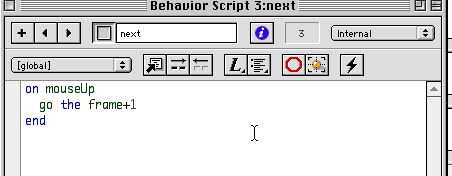
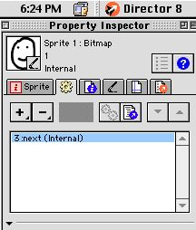

Without Lingo Scripts the Playback Head moves from left to right in the Score and your movie plays from begining to end. In this mission we'll use scripts to stop an animation and give the player a choice to continue it. To do this we'll need to use two type of scripts: Frame Scripts and Sprite Scripts.
!!@ Talk a litte more about why this is useful
Here is a Frame scripts to hold the Playback Head on the current frame:
on exitFrame
go the frame
end
The first statement "on exitFrame" indicates that the following line should be executed when the Playback Head exits the frame. Later well see other "on" statements that are trigger by other events. The statement "go the frame" keeps the Playback Head on the current frame.


Once a script is created you can use it again by dragging in from the Cast. In this case you can have the Playback head hold on the another frame by dragging the script to another Frame Script Cell. Give it a try.
Once the movie stops, we want to provide a button to continue the animation. Any Sprite can be made into a button by attaching a Script to it. Attaching the following Script will make the Playback Head continue after it is stopped with a "go the frame" Frame Script:
on mouseUp
go the frame+1
end
The "on mouseUp" statement means execute the following statement when the mouse is release on the Sprite. The statement "go the frame+1", uses the same go command as before, but now the target frame is the calculation of the current frame number (the frame) plus 1.
Here's how to create this Sprite Script:




!!@ Give pointers on what can go wrong and what to do about it
Watch out for miss spellings, for example: "on mouse Up" is not right (notice the space).
Watch out for attaching Frame Script to Sprite.
Use Remove Behavior to clean up.
Worst case delete all in the Score and rebuild.
!!@ review terminology
Here is the Frame Script again.
on exitFrame
go the frame
end
Here is the Sprite Script again.
on mouseUp
go the frame+1
end
Handlers. Statements. Commands and parameters. Expressions.
©2000 John Henry Thompson.